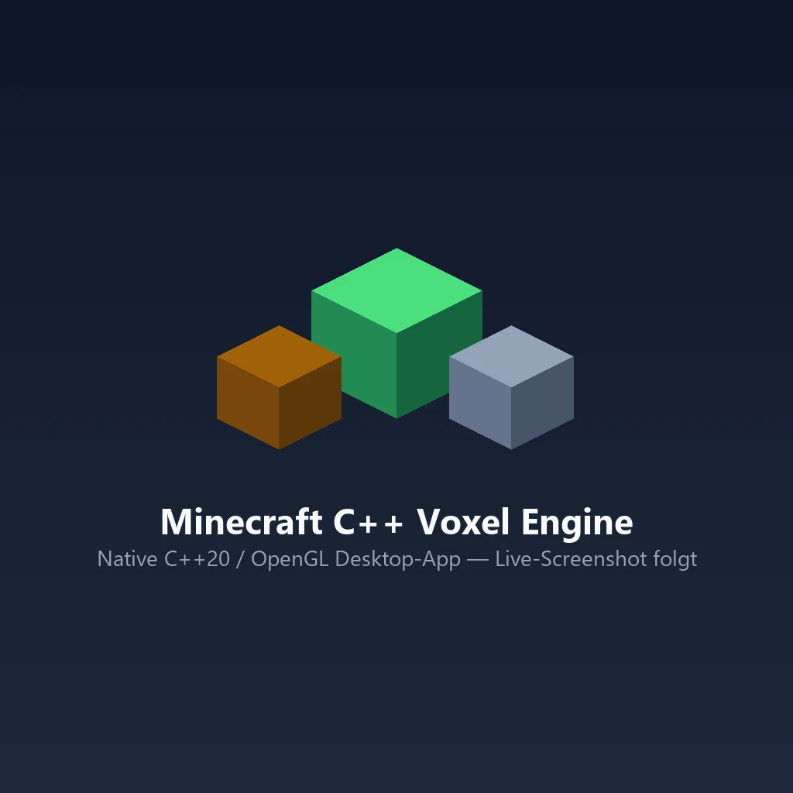

🧱 Minecraft C++ Voxel Engine (1:1 Remake)🧱 Minecraft C++ Voxel Engine (1:1 Remake)

Eine hoch-performante 3D-Voxel-Engine in C++20 und OpenGL 4.5 nach dem Vorbild von Minecraft. Bietet voll-funktionale Redstone-Logikschaltungen (Wires, Torches, Levers, Lamps), prozedurale Biome (Wüste, Schnee, Berge), 3D-Höhlensysteme mit Lava/Erzen, Tageszeitzyklus, Wasser-Physik, Inventar-Crafting (2x2) und binäre Chunk-Serialisierung.
A high-performance 3D voxel engine built with C++20 and OpenGL 4.5 inspired by Minecraft. Features complete Redstone logic circuits, procedural biomes, 3D cave generation, dynamic day/night cycles, buoyancy water physics, 2x2 crafting inventory, and binary chunk persistence.